ここでは、ScenarioModをさわる前段階として、Visual Studioのインストール時の留意点が記載されています。
Visual C++ をインストールしていない人は、この段階で、Visual C++ をインストールすること。
ScenarioModのコンパイルは、Visual Studio 2013 ～ Visual Studio 2022 で可能です。
Visual Studio Community 2013を 普通にインストールすればOKです。
日本語化する際には、Visual Studio 2013 Language Pack を利用してください。
TOOLのOPTIONから以下のような設定で日本語を選択すれば日本語化されます。
以降、起動時に言語パックのエラーが出るかと思いますが、気にする必要はありません。
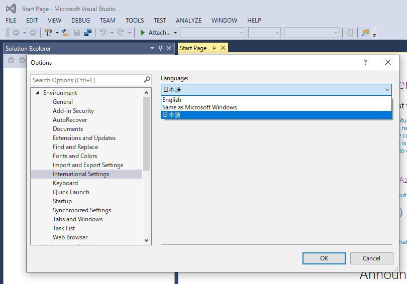
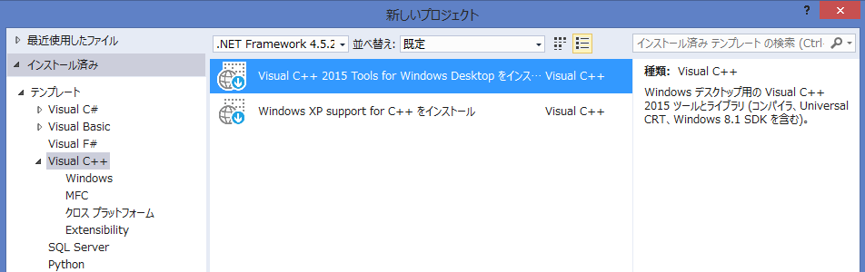
インストール後、ScenarioModの.slnを起動し、プラットフォームツールセットとして Visual Studio 2015 を選択しましょう。
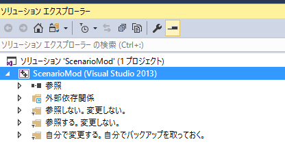
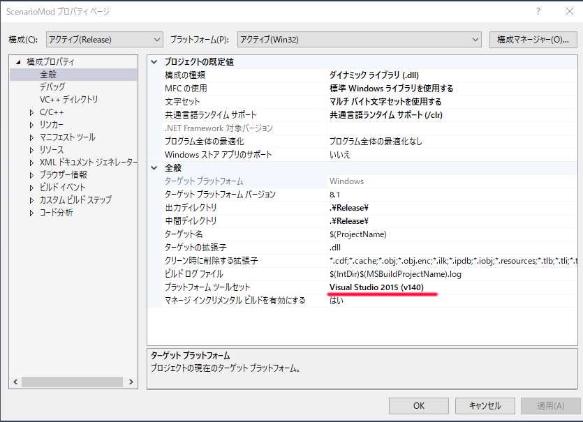
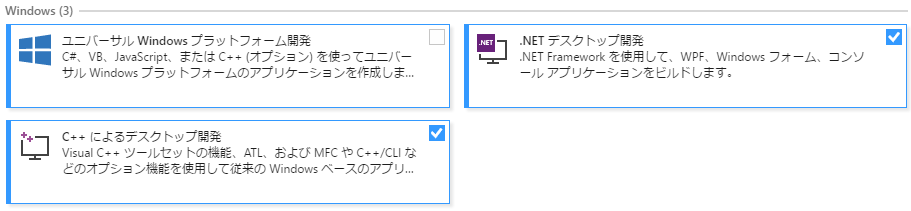
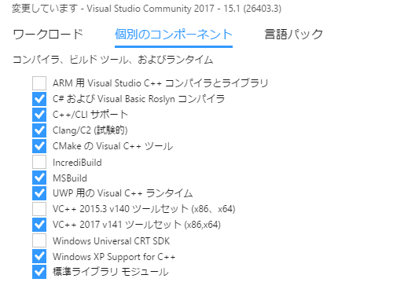
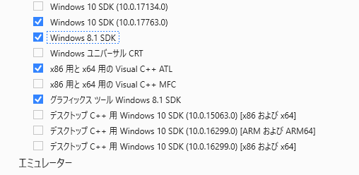
インストール後、ScenarioModの.slnを起動し、プラットフォームツールセットとして Visual Studio 2017 を選択しましょう。
Windows SDK は 迷うのであれば、8.1を指定してください。
Windows 10 SDKを利用する場合、「10.0.17763.0」以下である必要があります。
このバージョンより「大きな」バージョンのWindows 10 SDKではコンパイルできません。
(アライメントオプションの/Zp1が邪魔をしているが、このオプションはScenarioModでは必須)
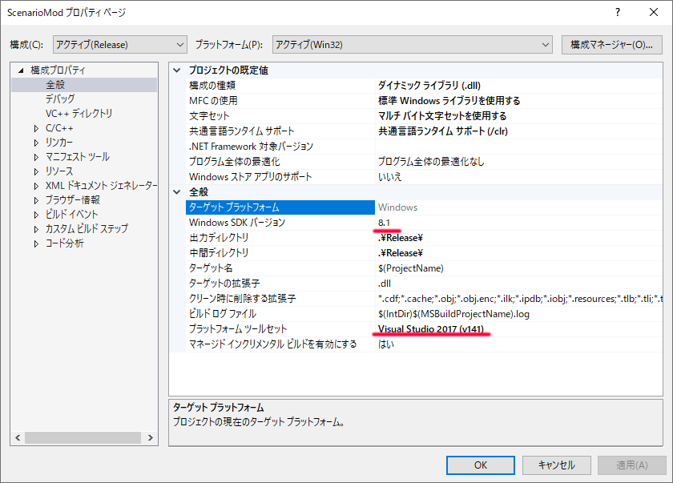
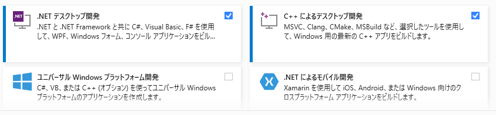
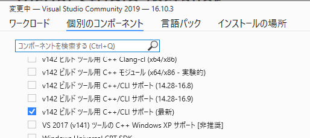
インストール後、ScenarioModの.slnを起動し、プラットフォームツールセットとして Visual Studio 2019 を選択しましょう。
ターゲットプラットフォームには、「10.0.17763.0」を選択するのが良いでしょう。
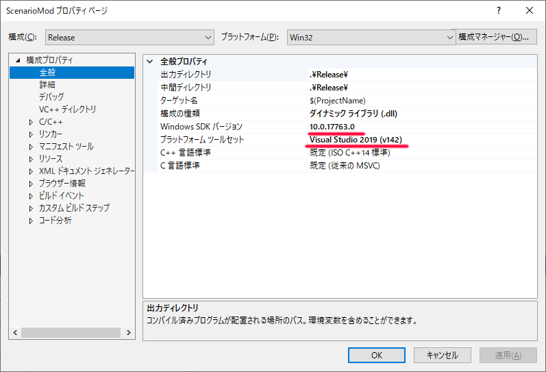
これより新しい「10.0.19041.0」などを選択すると、コンパイルできないので注意。
(アライメントオプションの/Zp1が邪魔をしているが、このオプションはScenarioModでは必須)
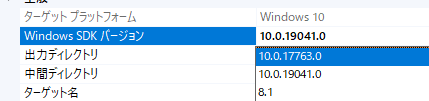
インストール後、ScenarioModの.slnを起動し、プラットフォームツールセットとして Visual Studio 2022 を選択しましょう。
ターゲットプラットフォームには、「10.0.17763.0」を選択してください。
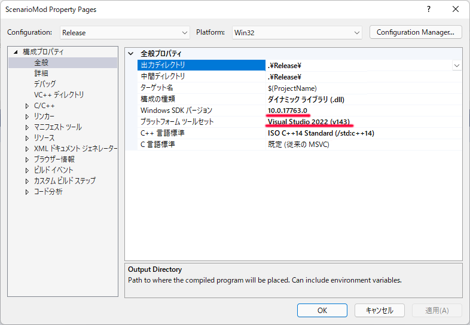
これより新しい「10.0.19041.0」などを選択すると、コンパイルできないので注意。
(アライメントオプションの/Zp1が邪魔をしているが、このオプションはScenarioModでは必須)
ScenarioMod v2.7.9.6 以降は、C++17 (C++/CLI版) に対応しています。
C++17を利用したい場合は、ScenarioModのプロジェクトから「C++言語標準」を「ISO C++17 標準」に設定してください。
2021年現在、C++17の機能を利用したソース例も増えてきたため、C++17までカバーしておいた方が
ソースのコピペでエラーが出る可能性を抑えることができることでしょう。
C++20は C++/CLI に対しては2021/8月現在ではまだ利用できません。
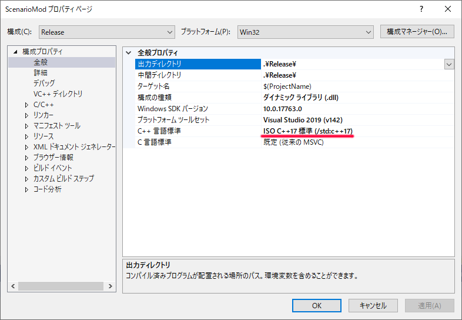
少し古いScenarioModを利用している人でも、
「ScenarioModプロジェクト」の「構成プロパティ」「C++」「コマンドライン」で、
以下のように、
/D "_HAS_STD_BYTE=0"
を付け加えれば C++17は使えます。
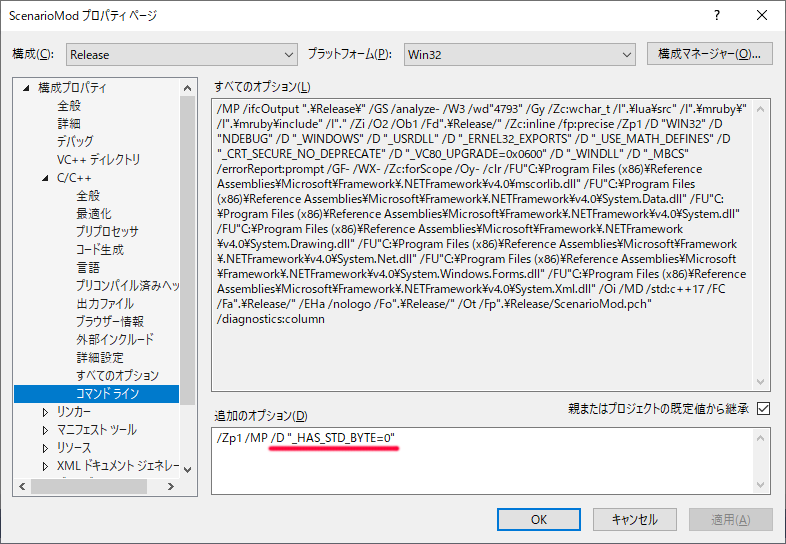